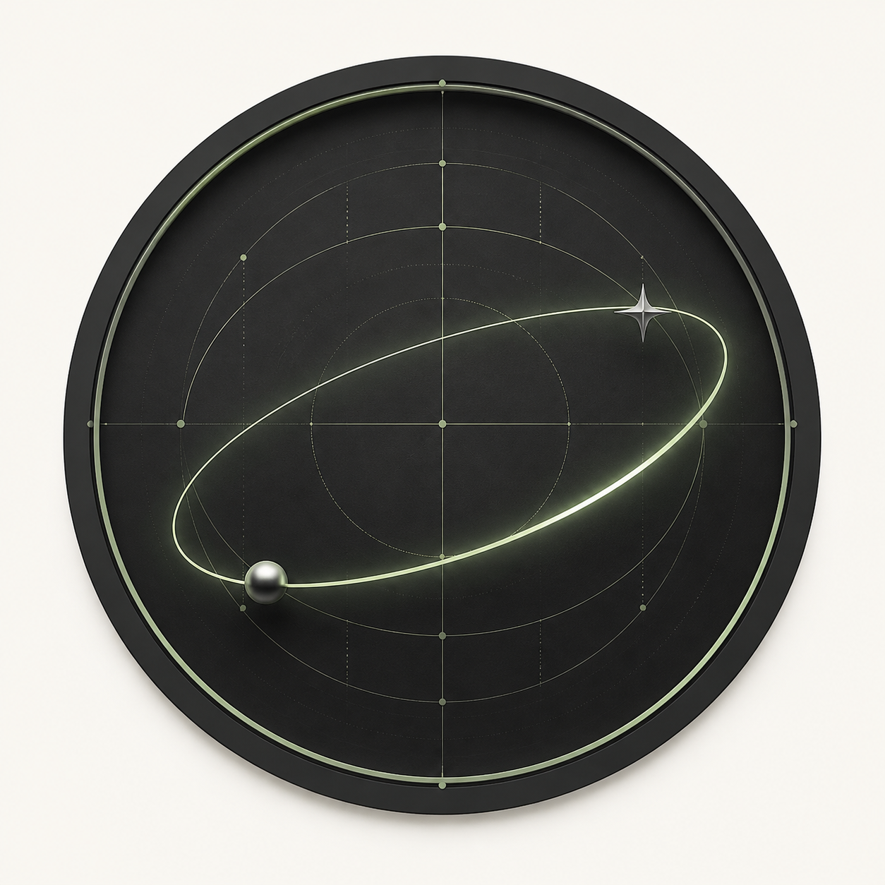

Languages
C · C++ · Python · JavaScript
SHWET ANAND / PORTFOLIO 2026
OPEN TO LEARN & BUILD
Second-year CSE student at Lovely Professional University, based in Mahagama, Jharkhand—exploring software, AI, and the art of solving problems.
SEMESTER II ENDS IN

01 / ABOUT ME
I’m Shwet Anand, a Computer Science and Engineering student from Mahagama, Jharkhand. I enjoy the full process of making things: understanding a problem, learning the tools, and turning an idea into a practical product.
Right now, I’m building a strong base in C++, data structures, algorithms, databases, and web development—while moving towards AI/ML and modern intelligent applications.
Let’s connect ↗B.Tech, Computer Science
& Engineering
Expected
graduation
Year student,
currently learning
02 / TECHNICAL TOOLKIT
A growing set of tools,
grounded in fundamentals.
C · C++ · Python · JavaScript
HTML · CSS · Responsive interfaces · Frontend development · APIs
DBMS · SQL · PostgreSQL · Prisma · Docker · Kubernetes
Git · GitHub · Vercel · Selenium · REST & authentication concepts
03 / DEVELOPER TOOLKIT
The tools I use to take
an idea towards production.
Collaborative workflows, versioning, and public project documentation.
Database foundations, ORM workflows, and modern deployment.
Exploring containers and the systems that help software scale.
Authentication concepts, AI-powered workflows, and automation testing.
04 / CURRENT FOCUS
C++ & Data Structures / Algorithms
I’m sharpening the habits behind good engineering through arrays, strings, functions, searching, sorting, problem solving, data structures, and algorithmic thinking.
05 / SELECTED PROJECTS
Visit GitHub ↗This is a living collection of the projects I build while learning. Each repository reflects a practical step—from programming fundamentals and problem-solving to full-stack products and real-world web experiences.
FROM THE LAB
> build
success
_
C · Problem solving
#include
<stdio.h>
main()
C language · Fundamentals
PayMe
₹ 2,500Secure paymentFintech · Product development
NEW ARRIVALS
Web development · Commerce
VOID
LABEL
Next.js · E-commerce · Full stack
06 / EDUCATION
2025 — 2029
Bachelor of Technology
Computer Science & Engineering
Expected graduation: 2029 · Currently in 2nd year
Class XII 73%
Class X 77%
07 / LEARNING ROADMAP
My current focus is simple: learn deeply, build consistently, and document the process in public. My long-term goal is to become a software engineer specializing in AI/ML.
Strengthening problem-solving skills through daily practice with core data structures and algorithms.
Creating practical web applications with databases, APIs, authentication, and thoughtful user experiences.
Exploring AI tools, APIs, machine learning, and the foundations needed to build intelligent, useful software.
08 / CONTACT